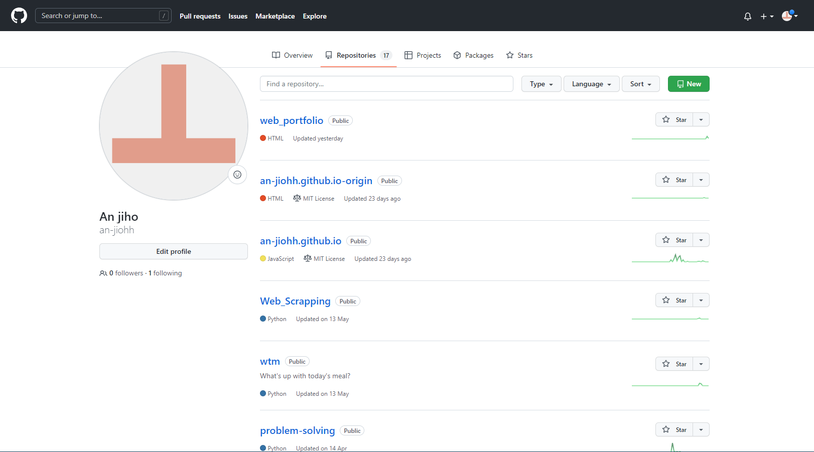
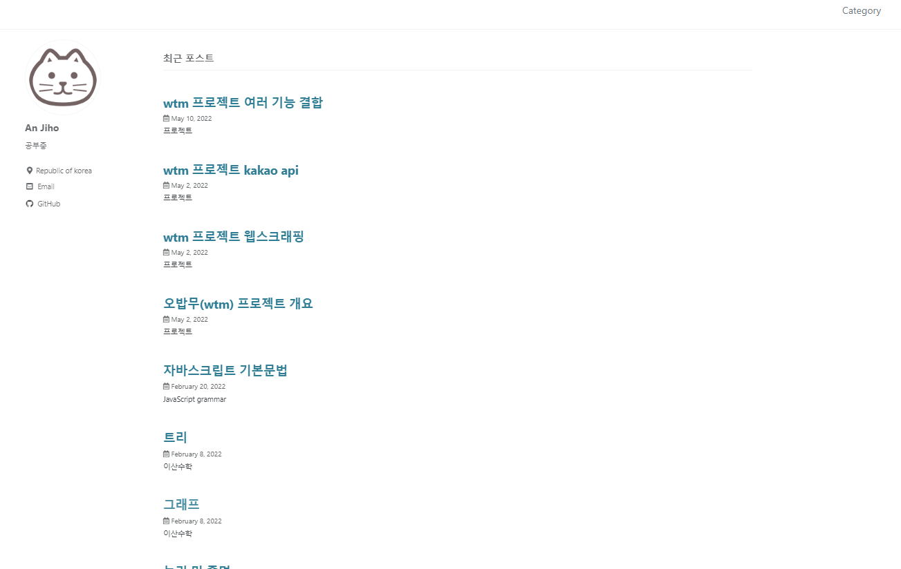

Archiving

GitHub
github.com/an-jiohh소스 코드 저장소 입니다.
- 학부간에 수강한 수업들의 소스코드
- 여러 프로젝트 소스코드
- 알고리즘 공부 관련 소스코드
- 그저 끄적이던 소스코드

Blog
an-jiho-blog.run.goorm.io지식 정리 및 공유 목적의 블로그 입니다.
- 지식들을 내 것으로 만들기 위한 기록
- 여러 것에 도전하며 얻은 지식 기록
- 전공 수업 간 추가로 얻은 정보공유
- 프로젝트 시행착오에 대한 기록